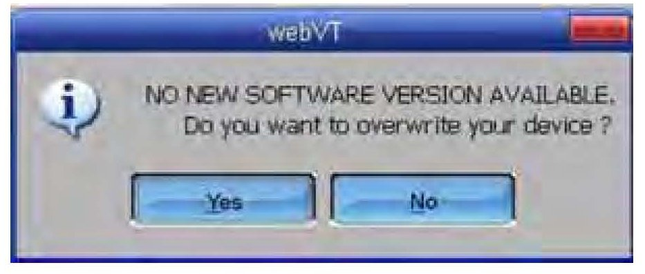

Tire Monitor System - ATEQ VT55 TPMS Update Information
12-043December 8,2012
Applies To:
ALL Vehicles with TPMS
ATEQ VT55 TPMS Update Information
INTRODUCTION
The software for the VT55 TPMS tool is updated periodically to add new vehicles, fix software bugs, and enhance the tool's function. You can use the ATEQ update wizard to download software and firmware to your VT55 using a PC and the Internet. It is extremely important to use the latest VT55 software to ensure that the current TPMS initialization and diagnostic procedures are used.
American Honda has a policy to ensure that VT55 tools are updated promptly. The VT55 software must be updated within 3 days of receiving notification of an available update from an iN message or other Honda communication. If an out-of-date version is used, any TPMS replacements will not be covered under warranty.
VT55 UPDATE REQUIREMENTS
^ VT55 Tool Kit (includes VT55, AC adapter, USB cable and CD): P/N AEQVT55
^ USB Cable (this cable came with the VT55): P/N AEQVT555
^ Internet access
^ A PC with Windows XP operating system or later (only 32-bit operating systems are supported)
To order the VT55, or the USB connector, go to the Acura Tool and Equipment catalog. Go to the iN > SERVICE > Service Bay> Tool and Equipment Program, or call 888-424-6857.
SOFTWARE VERSION
To determine the latest software version, go to the iN > SERVICE > Service Bay> Diagnostic Tools Software Versions.
To check the VT55 version software, turn on the unit and the version number appears for about 2 seconds during the startup process. If you miss it, turn the VT55 off by pressing and holding the power switch for about 2 seconds, then turn it back on.
WARRANTY CLAIM INFORMATION
None. This service bulletin is for information purposes only.
INSTALLING THE VT55 UPDATE SOFTWARE ON YOUR COMPUTER
NOTE:
The screens shown in this procedure may differ slightly due to PC variations.
1. Go online to update.ateq.com/software/webvt/update_webvt.zip
2. Enter the login and password.
Login: webvt
Password: update
3. The File Download screen appears. Select Save. The Zip file will be saved to your computer.
4. After the Zip file finishes downloading, open the update_webvt.zip file by double-clicking on it.

5. The WinZip - update_webvt.zip screen appears. Double-click on the .exe file.
NOTE:
If you see a Compressed (Zipped) Folders Error, contact your IT person because there is a permissions issue with your firewall.
6. The WinZip Caution screen appears. Select Yes.
7. The InstallShield Wizard screen appears. Select Next.
8. The InstallShield Wizard asks you to select a destination for the VT55 files. Select Next.
9. The InstallShield Wizard asks it you want to automatically start the WebVT application when you start your computer. Select Yes.

10. The InstallShield Wizard will prompt you when WebVT is installed on your computer. Select Finish.
11. The serial emulation port driver installer screen appears. Connect your VT55, and turn it on. Select Next.
12. After a few seconds, the serial emulation port driver installer prompts you when it is finished. Select Finish.
13. If you have any problems installing the VT55 update software, call ATEQ at 734-838-3100, and select option 3 for service.
14. Once the VT55 is updated to the current software version, go to VT55 UPDATE INSTRUCTIONS.
VT55 UPDATE INSTRUCTIONS
NOTE:
^ Some screens may list the tool as VT50 or VT55. This is OK; it will not affect updating the tool.
^ If at any time during the update an error message appears, or the VT55 is not detected, see the Standard User Guide that is on the ATEQ CD that came with the tool, or call ATEQ at 734-838-3100, and select option 3 for service.
1. Go to your desktop, and double-click the WebVT icon to launch the VT55 update software.
2. Connect the VT55 to your PC with the USB cable, then turn it on. The serial number and current software version automatically display.
3. The Found New Hardware Wizard may appear. If it does, select Yes, now and every time I connect a device, then select Next.
4. The Found New Hardware Wizard prompts you to install the ATEQ RS232 Emulation software. Select Install the software automatically (Recommended), then select Next.

5. The Found New Hardware Wizard will prompt you when the software is installed. Select Finish.
6. Select UPDATE DEVICE. Depending on your Internet connection, you may be prompted for a login and password. If you know your login and password, enter them, otherwise, contact your administrator or internet service provider for the login and password.
7. If a new software version is available, you'll see a message asking if you want to update the VT55. Select Yes.
NOTE:
Do not disconnect the VT55 during the update procedure, as you may permanently damage the tool.

If no new software version is available, you'll see a message asking if you want to overwrite the existing software. Select No.
8. The Dealer Identification screen appears. Enter your 6-digit dealer number, then select Apply.
9. If the dealer number is valid, your dealership's name and address appears in the dealer information box. Select NEXT.
If the dealership number is not valid, call the American Honda Special Tools Hotline for assistance at 800-346-6327.
10. The VT55 begins updating. When the VT55 is finished updating, you'll see a message stating the update is done. Disconnect the VT55, then select OK.
11. Let the VT55 turn off (for about 1 minute). Turn it on, and confirm that the software is updated to the software version you observed in SOFTWARE VERSION on page 1.
12. If you have more than one VT55, repeat the update procedure for each unit.
13. Once all VT55s are updated, select EXIT, and store the USB cable in a safe location for future updates.
Disclaimer